1App installieren
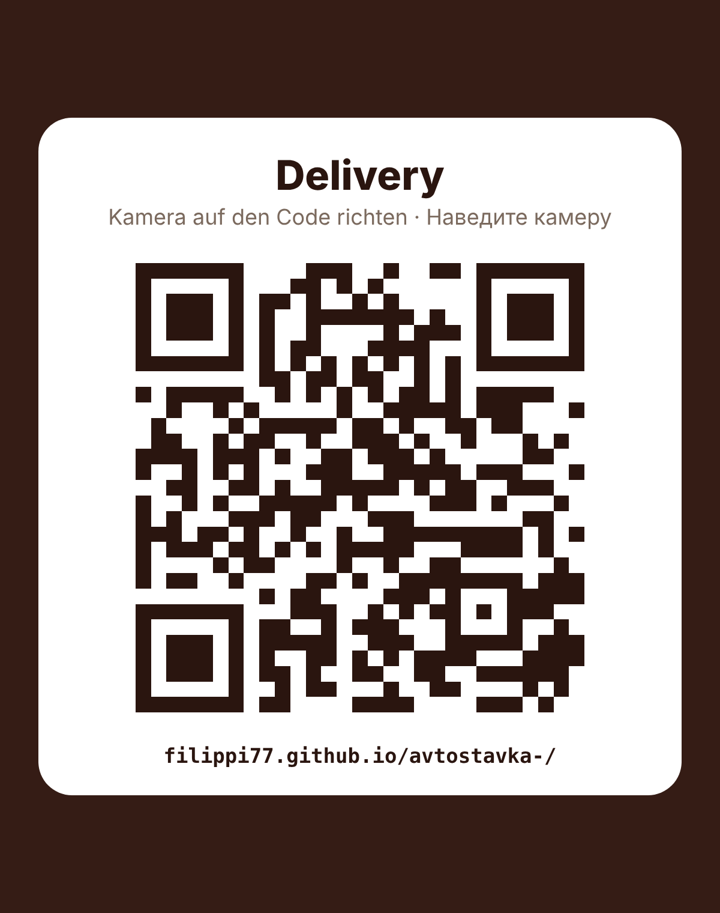
Delivery ist eine Web-App – kein App Store nötig. Mit der Handykamera den QR-Code scannen oder diese Adresse öffnen:
filippi77.github.io/avtostavka-/
Danach die App einmal zum Home-Bildschirm hinzufügen. Sie startet dann wie jede andere App im Vollbild.
📱 iPhone
- Link in Safari öffnen (nicht in Chrome).
- Unten auf Teilen tippen (Quadrat mit Pfeil nach oben; bei neuem iOS erst auf ⋯).
- „Zum Home-Bildschirm“ → „Hinzufügen“.
- Ab jetzt Delivery über das Icon starten.
Die App zeigt beim ersten Öffnen in Safari selbst einen Hinweis dazu.
🤖 Android
Variante A – mit Live-Scanner (empfohlen):
- github.com/filippi77/avtostavka-/releases/latest öffnen.
- Datei delivery-….apk herunterladen und öffnen.
- Installation aus dieser Quelle erlauben → Installieren.
Variante B – ohne Download: Link in Chrome öffnen → Menü ⋮ → „App installieren“.
Beim ersten Start
- Standort erlauben – für die Route ab deiner Position, Adressvorschläge in der Nähe und „Vor Ort“.
- Kamera erlauben – beim ersten Scan.
- Die erste Texterkennung dauert etwas länger (ca. 15 MB werden geladen, am besten im WLAN). Danach geht es schnell.
Die App ist auf Deutsch. Russisch: ⚙ → Sprache der App.
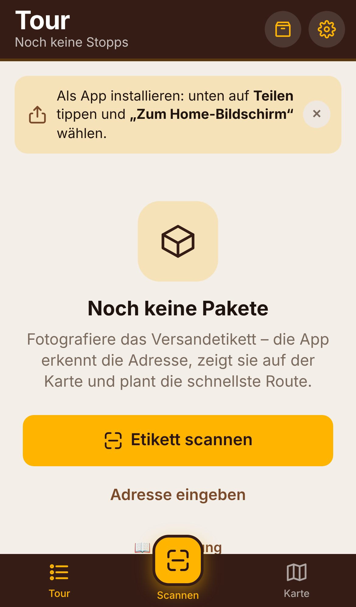
2Pakete erfassen
a) Etikett scannen
- Unten auf Scannen tippen.
- Adressfeld groß, gerade und scharf fotografieren.
- Die App erkennt Adresse, Empfänger, Telefon, die Servicestufe (Express Plus / Express / Saver) und die Sendungsnummer 1Z…. Der Absender wird ignoriert.
- Adresse prüfen → Hinzufügen.
Mit „Hinzufügen & nächstes“ öffnet sich sofort die Kamera für das nächste Paket.
Android-App: Der Scanner liest live im Kamerabild. Rahmen wird grün, Handy vibriert – Adresse wird automatisch übernommen. ⚡ = Taschenlampe.
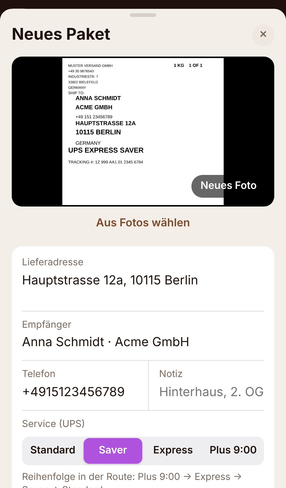
b) Servicestufe (Express)
Unten im Formular steht die Servicestufe. Sie wird vom Etikett übernommen, kann aber angetippt werden:
| 9:00 | Express Plus – kommt in der Route ganz nach vorne |
| 12:00 | Express – danach |
| SAVER | Express Saver – danach |
| STD | Standard – zum Schluss |
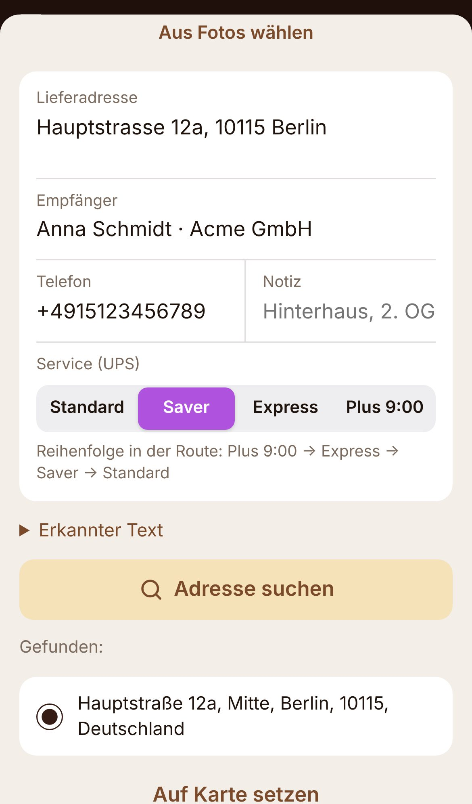
c) Adresse eintippen
- „Adresse eingeben“ bzw. „+ Adresse manuell eingeben“.
- Ein paar Buchstaben tippen – es erscheinen Straßen im Umkreis von 50 km, die nächsten zuerst.
- Straße antippen → Hausnummer tippen → das Haus antippen → Hinzufügen.
Kein Treffer? Adresse komplett eintippen und „Adresse suchen“.
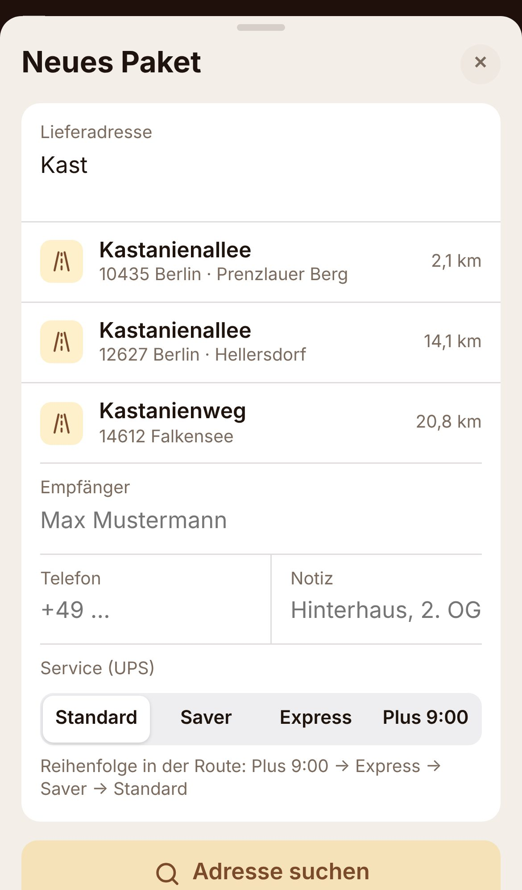
d) Adressbuch – häufige Adressen
Jede Adresse wird gemerkt – mit Empfänger, Telefon, Notiz und Position. Beim Tippen erscheinen gespeicherte Adressen zuerst mit ★ und wie oft du dort warst („9ד). Sofort, auch ohne Internet.
Feld leer lassen und antippen → die häufigsten Adressen erscheinen.
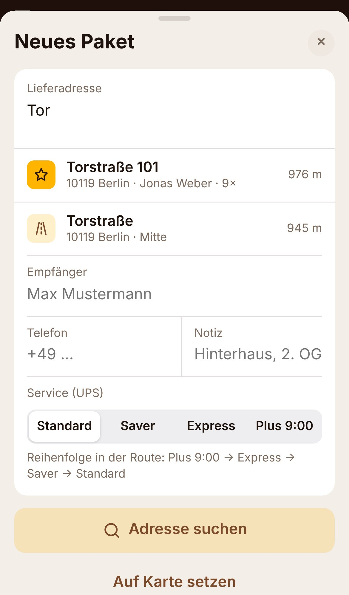
3Route planen
Wenn alle Pakete erfasst sind, oben auf das Routen-Symbol (geschwungene Linie) tippen oder auf der Karte Optimieren.
- Die App berechnet die schnellste Reihenfolge ab deinem Standort – nach echter Fahrzeit.
- Express-Pakete kommen immer zuerst (9:00 → 12:00 → Saver → Standard).
- Die Stopps werden neu nummeriert, mit Entfernung und Fahrzeit.
- Reihenfolge von Hand ändern: Stopp in der Liste antippen → ↑ / ↓.
Neue Pakete dazugekommen? Einfach noch einmal optimieren.
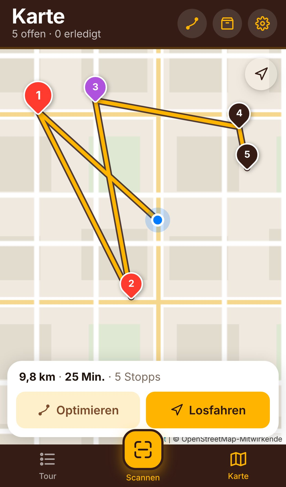
4Zustellen
Der nächste Stopp
Oben steht immer der nächste Stopp wie ein Etikett: Empfänger, Adresse, Servicestufe und Sendungsnummer.
- Navigieren – öffnet die Navi-App mit diesem Stopp.
- ✓ Zugestellt – Stopp erledigt, der nächste rückt nach.
- Nicht angetroffen – kommt unter „Erledigt“ und kann später zurückgeholt werden.
- Darunter: Anrufen, Auf Karte, Express an/aus, Bearbeiten.
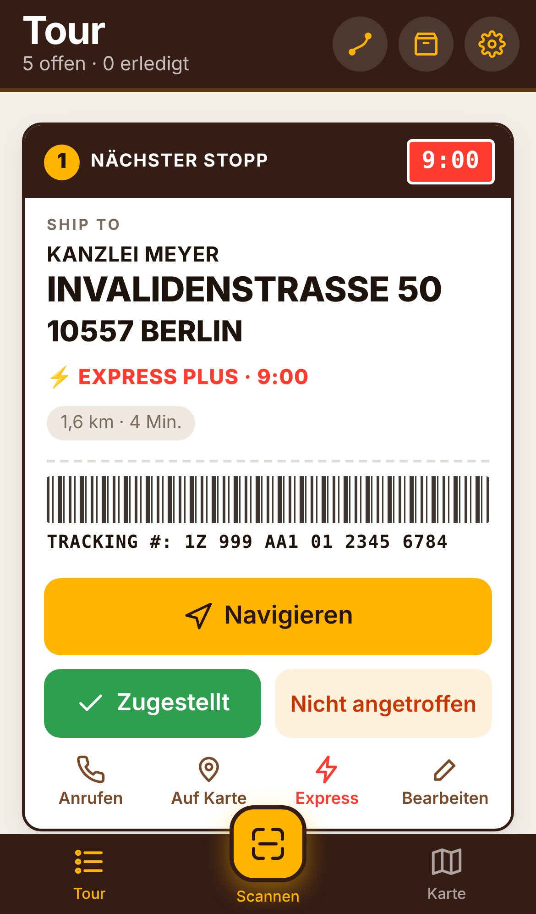
Ganze Tour in Google Maps
„Alle … Stopps in Google Maps“ übergibt die offenen Stopps in der optimierten Reihenfolge – bis zu 10 Stopps auf einmal (Grenze von Google). Danach wieder drücken für die nächsten 10.
Stopp in der Liste antippen → weitere Aktionen (Route, Zugestellt, Nicht da, ↑ ↓, Express, Bearbeiten, Löschen).
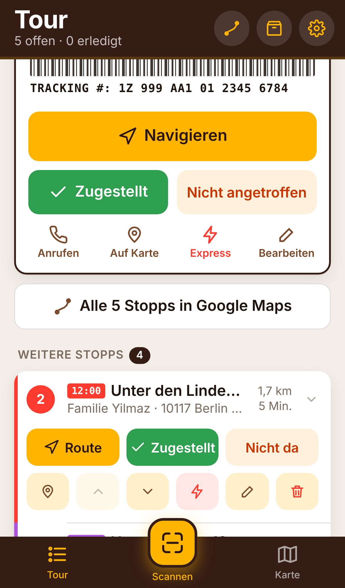
Navi-App wählen
Unter ⚙ → Navigations-App: Apple Karten, Google Maps, Waze, HERE WeGo, Sygic, Yandex Navi – oder „Jedes Mal fragen“. Dann erscheint diese Auswahl, auf Wunsch mit „Als Standard merken“.
Die gewählte App muss auf dem Handy installiert sein.
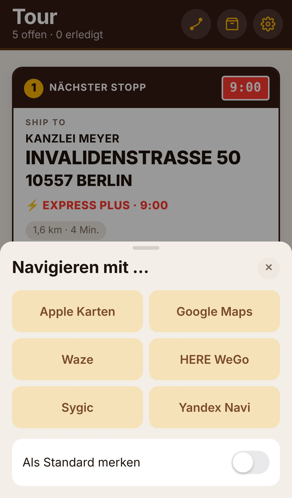
„Vor Ort“
Bist du länger als 30 Sekunden an einer Adresse der Tour und die App ist geöffnet, erscheint 📍 Vor Ort seit …. Der Aufenthalt wird im Verlauf gespeichert.
Zugestellt und Nicht angetroffen werden mit Uhrzeit und Position festgehalten.
Während du in der Navi-App bist, pausiert die Aufzeichnung. Zurück in Delivery geht es weiter.
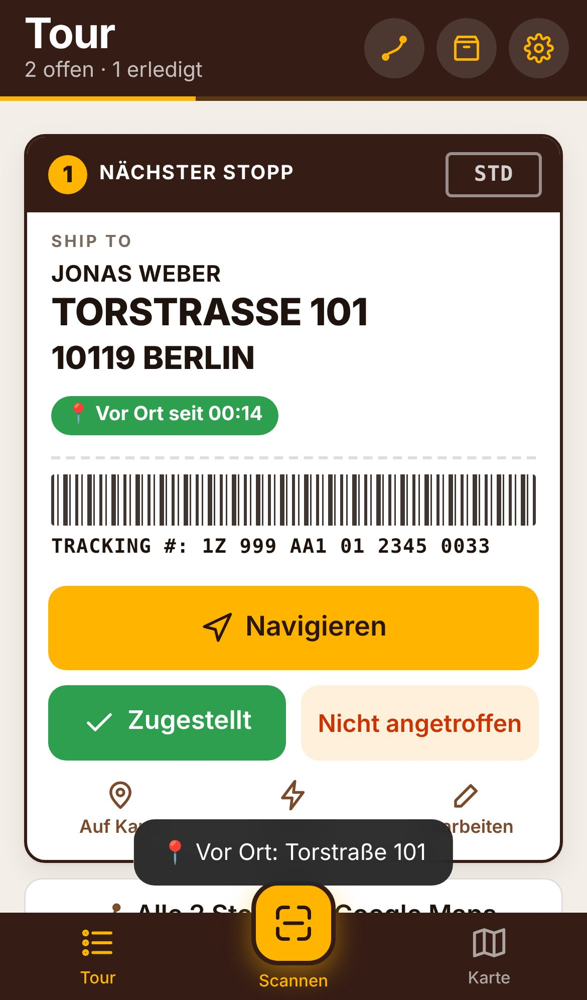
5Touren, Verlauf & Sicherung
Oben auf das Kisten-Symbol tippen.
- Jede Tour wird täglich automatisch gesichert („Heute“, „Gestern“, … – 30 Tage).
- Eigener Name (z. B. „Montag – Tour A“) → Aktuelle Tour speichern.
- Laden ersetzt die aktuelle Tour, + fügt die Stopps hinzu. Status, Express und Sendungsnummern werden dabei zurückgesetzt.
Typischer Morgen: Touren → „Montag – Tour A“ → Laden → neue Pakete scannen → Optimieren.
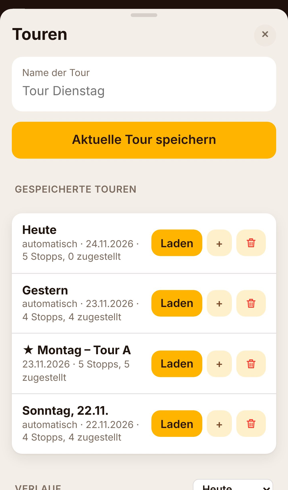
Verlauf
Im selben Fenster unter Verlauf: Aufenthalte, Zustellungen und „nicht angetroffen“ – pro Tag, mit Uhrzeit und Abstand zur Adresse. „Verlauf als Tabelle (CSV) teilen“ erzeugt eine Excel-Tabelle.
Sicherung
Alle Daten liegen nur auf deinem Handy. Mit „Sicherung exportieren“ als Datei speichern (Dateien, Mail) – z. B. vor einem Handywechsel. „Sicherung laden“ stellt sie wieder her.
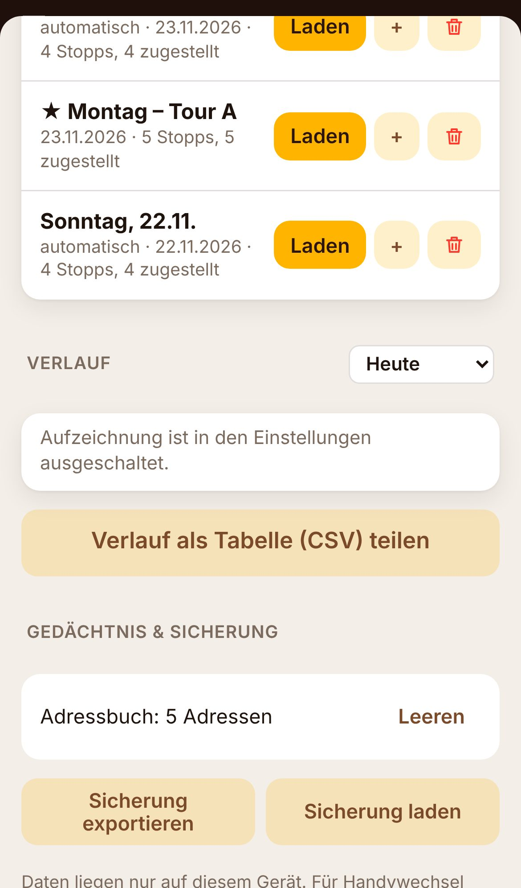
6Einstellungen ⚙
| Sprache der App | Deutsch / Русский |
|---|---|
| Sprache der Etiketten | Deutsch, Deutsch + Russisch, Russisch |
| Standard-Ort | Wird ergänzt, wenn auf dem Etikett kein Ort steht |
| Suchradius | 10 / 25 / 50 / 100 km für Adressvorschläge |
| Start der Route | Mein Standort (GPS) oder erster Stopp |
| Navigations-App | siehe Kapitel 4 |
| Express Saver vor Standard | aus = Saver wie Standard |
| Aufenthalte aufzeichnen | „Vor Ort“ an/aus, ab 30 s / 1 min / 2 min |
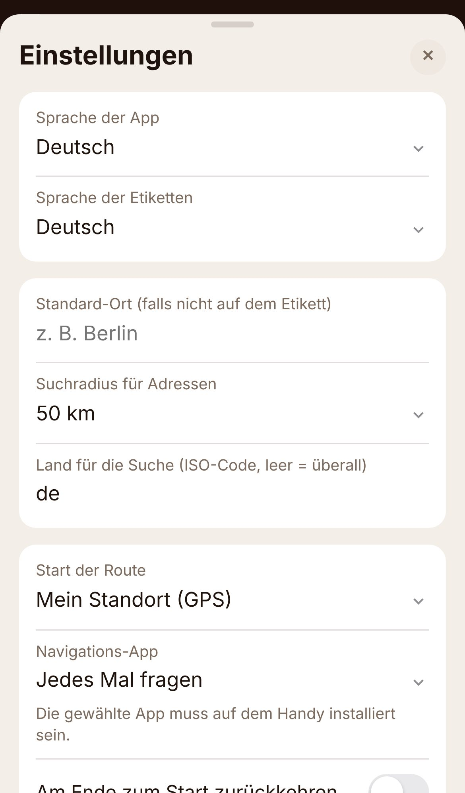
7Tipps & Probleme
| Adresse falsch erkannt | Im Formular korrigieren. Unter „Erkannter Text“ steht alles, was die Kamera gelesen hat. Näher, gerader und mit Licht fotografieren. |
|---|---|
| Punkt auf der Karte liegt falsch | Auf der Karte den Marker gedrückt halten und zum richtigen Haus ziehen. Die App merkt sich die Korrektur für das nächste Mal. |
| „Hausnummer nicht auf der Karte“ | Die Hausnummer fehlt in OpenStreetMap. Apple Karten, Google Maps und Waze bekommen dann die Adresse als Text und finden das Haus selbst. Für HERE, Sygic & Yandex den Marker ziehen. |
| App zeigt alte Version | App schließen (nach oben wischen) und neu öffnen – bei Bedarf zweimal. |
| Kein Standort / „GPS nicht verfügbar“ | iPhone: Einstellungen → Datenschutz → Ortungsdienste → Safari-Websites → „Beim Verwenden“. Android: Standort für Chrome bzw. Delivery erlauben. |
| Handy gewechselt / App gelöscht | Vorher „Sicherung exportieren“, auf dem neuen Handy „Sicherung laden“. Beim Löschen des Icons löscht das iPhone auch die Daten. |
| Akku | Bei geöffneter App ist GPS aktiv. „Aufenthalte aufzeichnen“ kann in den Einstellungen ausgeschaltet werden. |
Datenschutz: Adressen, Telefonnummern und Verlauf bleiben auf deinem Handy. Kundendaten (z. B. Sicherungsdateien) nicht über private Chats weitergeben.